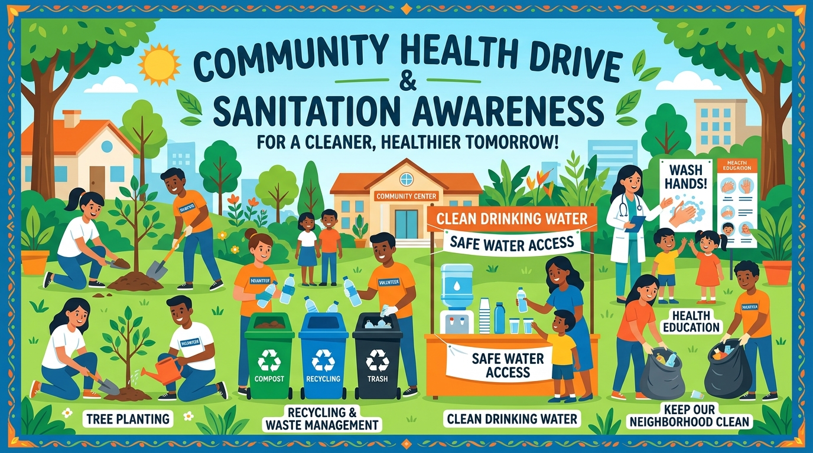

Join nationwide cleanliness drives, participate in school health workshops, and celebrate global hygiene observation days.
Join as Volunteer
Goal-driven public awareness campaigns designed for schools, colleges, and local communities.
Promoting proper 20-second handwashing with soap across schools, public eateries, and residential complexes to reduce gastrointestinal infection rates.
Teaching households the 1-minute boiling rule, proper vessel covered storage, and safe dispenser taps to eradicate waterborne contamination.
Implementing 3-bin waste segregation (Green, Blue, Red) across college campuses, cafeterias, and student hostels.
Eliminating stagnant rainwater pools around neighborhood streets to destroy mosquito breeding spots for Dengue & Malaria prevention.
Mark your calendar for key annual days promoting global hygiene, clean water access, and public health.
Focuses on advocating sustainable management of freshwater resources and universal safe drinking water access.
WHO initiative reinforcing hand hygiene in healthcare settings and community environments to save lives.
Dedicated to advocating handwashing with soap as an easy, effective, and affordable disease prevention habit.
Volunteer for upcoming school health workshops and neighborhood cleanliness drives.